> 本文来自一枝花算不算浪漫投稿， 原文地址：[https://juejin.im/post/5eacc1c75188256d976df748](https://juejin.im/post/5eacc1c75188256d976df748)。
前言
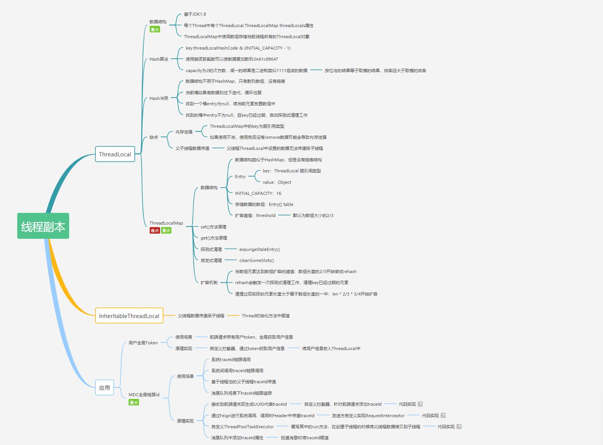
全文共 10000+字，31 张图，这篇文章同样耗费了不少的时间和精力才创作完成，原创不易，请大家点点关注+在看，感谢。
对于ThreadLocal，大家的第一反应可能是很简单呀，线程的变量副本，每个线程隔离。那这里有几个问题大家可以思考一下：
ThreadLocal的 key 是弱引用，那么在ThreadLocal.get()的时候，发生GC之后，key 是否为null？ThreadLocal中ThreadLocalMap的数据结构？ThreadLocalMap的Hash 算法？ThreadLocalMap中Hash 冲突如何解决？ThreadLocalMap的扩容机制？ThreadLocalMap中过期 key 的清理机制？探测式清理和启发式清理流程？ThreadLocalMap.set()方法实现原理？ThreadLocalMap.get()方法实现原理？- 项目中
ThreadLocal使用情况？遇到的坑？ - ......
上述的一些问题你是否都已经掌握的很清楚了呢？本文将围绕这些问题使用图文方式来剖析ThreadLocal的点点滴滴。
目录
注明： 本文源码基于JDK 1.8
ThreadLocal代码演示
我们先看下ThreadLocal使用示例：
public class ThreadLocalTest {
private List<String> messages = Lists.newArrayList();
public static final ThreadLocal<ThreadLocalTest> holder = ThreadLocal.withInitial(ThreadLocalTest::new);
public static void add(String message) {
holder.get().messages.add(message);
}
public static List<String> clear() {
List<String> messages = holder.get().messages;
holder.remove();
System.out.println("size: " + holder.get().messages.size());
return messages;
}
public static void main(String[] args) {
ThreadLocalTest.add("一枝花算不算浪漫");
System.out.println(holder.get().messages);
ThreadLocalTest.clear();
}
}
打印结果：
[一枝花算不算浪漫]
size: 0
ThreadLocal对象可以提供线程局部变量，每个线程Thread拥有一份自己的副本变量，多个线程互不干扰。
ThreadLocal的数据结构

Thread类有一个类型为ThreadLocal.ThreadLocalMap的实例变量threadLocals，也就是说每个线程有一个自己的ThreadLocalMap。
ThreadLocalMap有自己的独立实现，可以简单地将它的key视作ThreadLocal，value为代码中放入的值（实际上key并不是ThreadLocal本身，而是它的一个弱引用）。
每个线程在往ThreadLocal里放值的时候，都会往自己的ThreadLocalMap里存，读也是以ThreadLocal作为引用，在自己的map里找对应的key，从而实现了线程隔离。
ThreadLocalMap有点类似HashMap的结构，只是HashMap是由数组+链表实现的，而ThreadLocalMap中并没有链表结构。
我们还要注意Entry， 它的key是ThreadLocal<?> k ，继承自WeakReference， 也就是我们常说的弱引用类型。
GC 之后 key 是否为 null？
回应开头的那个问题， ThreadLocal 的key是弱引用，那么在ThreadLocal.get()的时候，发生GC之后，key是否是null？
为了搞清楚这个问题，我们需要搞清楚Java的四种引用类型：
- 强引用：我们常常 new 出来的对象就是强引用类型，只要强引用存在，垃圾回收器将永远不会回收被引用的对象，哪怕内存不足的时候
- 软引用：使用 SoftReference 修饰的对象被称为软引用，软引用指向的对象在内存要溢出的时候被回收
- 弱引用：使用 WeakReference 修饰的对象被称为弱引用，只要发生垃圾回收，若这个对象只被弱引用指向，那么就会被回收
- 虚引用：虚引用是最弱的引用，在 Java 中使用 PhantomReference 进行定义。虚引用中唯一的作用就是用队列接收对象即将死亡的通知
接着再来看下代码，我们使用反射的方式来看看GC后ThreadLocal中的数据情况：(下面代码来源自：https://blog.csdn.net/thewindkee/article/details/103726942 本地运行演示 GC 回收场景)
public class ThreadLocalDemo {
public static void main(String[] args) throws NoSuchFieldException, IllegalAccessException, InterruptedException {
Thread t = new Thread(()->test("abc",false));
t.start();
t.join();
System.out.println("--gc后--");
Thread t2 = new Thread(() -> test("def", true));
t2.start();
t2.join();
}
private static void test(String s,boolean isGC) {
try {
new ThreadLocal<>().set(s);
if (isGC) {
System.gc();
}
Thread t = Thread.currentThread();
Class<? extends Thread> clz = t.getClass();
Field field = clz.getDeclaredField("threadLocals");
field.setAccessible(true);
Object ThreadLocalMap = field.get(t);
Class<?> tlmClass = ThreadLocalMap.getClass();
Field tableField = tlmClass.getDeclaredField("table");
tableField.setAccessible(true);
Object[] arr = (Object[]) tableField.get(ThreadLocalMap);
for (Object o : arr) {
if (o != null) {
Class<?> entryClass = o.getClass();
Field valueField = entryClass.getDeclaredField("value");
Field referenceField = entryClass.getSuperclass().getSuperclass().getDeclaredField("referent");
valueField.setAccessible(true);
referenceField.setAccessible(true);
System.out.println(String.format("弱引用key:%s,值:%s", referenceField.get(o), valueField.get(o)));
}
}
} catch (Exception e) {
e.printStackTrace();
}
}
}
结果如下：
弱引用key:java.lang.ThreadLocal@433619b6,值:abc
弱引用key:java.lang.ThreadLocal@418a15e3,值:java.lang.ref.SoftReference@bf97a12
--gc后--
弱引用key:null,值:def
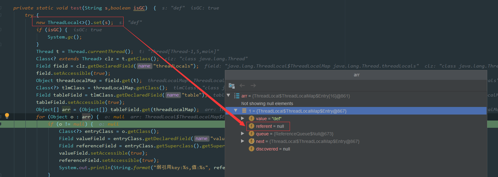
如图所示，因为这里创建的ThreadLocal并没有指向任何值，也就是没有任何引用：
new ThreadLocal<>().set(s);
所以这里在GC之后，key就会被回收，我们看到上面debug中的referent=null, 如果改动一下代码：
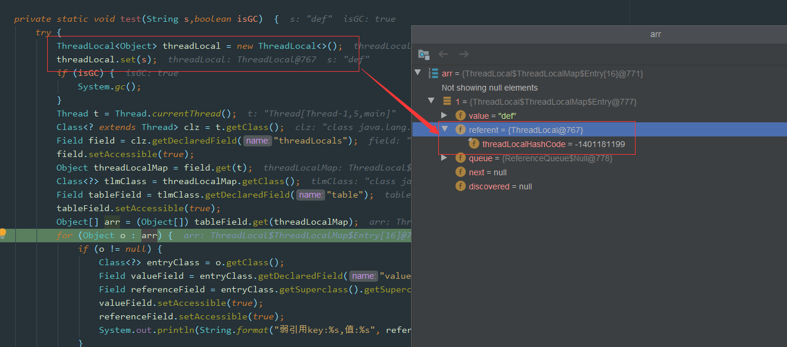
这个问题刚开始看，如果没有过多思考，弱引用，还有垃圾回收，那么肯定会觉得是null。
其实是不对的，因为题目说的是在做 ThreadLocal.get() 操作，证明其实还是有强引用存在的，所以 key 并不为 null，如下图所示，ThreadLocal的强引用仍然是存在的。
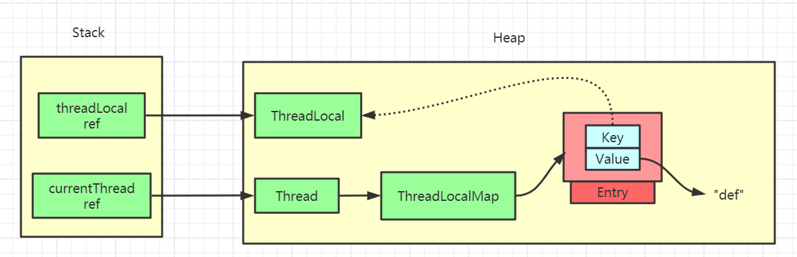
如果我们的强引用不存在的话，那么 key 就会被回收，也就是会出现我们 value 没被回收，key 被回收，导致 value 永远存在，出现内存泄漏。
ThreadLocal.set()方法源码详解

ThreadLocal中的set方法原理如上图所示，很简单，主要是判断ThreadLocalMap是否存在，然后使用ThreadLocal中的set方法进行数据处理。
代码如下：
public void set(T value) {
Thread t = Thread.currentThread();
ThreadLocalMap map = getMap(t);
if (map != null)
map.set(this, value);
else
createMap(t, value);
}
void createMap(Thread t, T firstValue) {
t.threadLocals = new ThreadLocalMap(this, firstValue);
}
主要的核心逻辑还是在ThreadLocalMap中的，一步步往下看，后面还有更详细的剖析。
ThreadLocalMap Hash 算法
既然是Map结构，那么ThreadLocalMap当然也要实现自己的hash算法来解决散列表数组冲突问题。
int i = key.threadLocalHashCode & (len-1);
ThreadLocalMap中hash算法很简单，这里i就是当前 key 在散列表中对应的数组下标位置。
这里最关键的就是threadLocalHashCode值的计算，ThreadLocal中有一个属性为HASH_INCREMENT = 0x61c88647
public class ThreadLocal<T> {
private final int threadLocalHashCode = nextHashCode();
private static AtomicInteger nextHashCode = new AtomicInteger();
private static final int HASH_INCREMENT = 0x61c88647;
private static int nextHashCode() {
return nextHashCode.getAndAdd(HASH_INCREMENT);
}
static class ThreadLocalMap {
ThreadLocalMap(ThreadLocal<?> firstKey, Object firstValue) {
table = new Entry[INITIAL_CAPACITY];
int i = firstKey.threadLocalHashCode & (INITIAL_CAPACITY - 1);
table[i] = new Entry(firstKey, firstValue);
size = 1;
setThreshold(INITIAL_CAPACITY);
}
}
}
每当创建一个ThreadLocal对象，这个ThreadLocal.nextHashCode 这个值就会增长 0x61c88647 。
这个值很特殊，它是斐波那契数 也叫 黄金分割数。hash增量为 这个数字，带来的好处就是 hash 分布非常均匀。
我们自己可以尝试下：
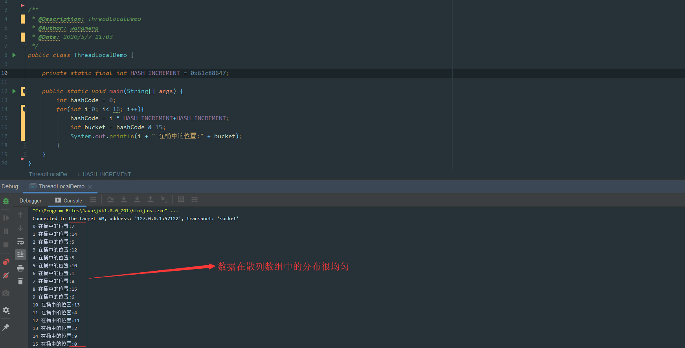
可以看到产生的哈希码分布很均匀，这里不去细纠斐波那契具体算法，感兴趣的可以自行查阅相关资料。
ThreadLocalMap Hash 冲突
注明： 下面所有示例图中，绿色块
Entry代表正常数据，灰色块代表Entry的key值为null，已被垃圾回收。白色块表示Entry为null。
虽然ThreadLocalMap中使用了黄金分割数来作为hash计算因子，大大减少了Hash冲突的概率，但是仍然会存在冲突。
HashMap中解决冲突的方法是在数组上构造一个链表结构，冲突的数据挂载到链表上，如果链表长度超过一定数量则会转化成红黑树。
而 ThreadLocalMap 中并没有链表结构，所以这里不能使用 HashMap 解决冲突的方式了。
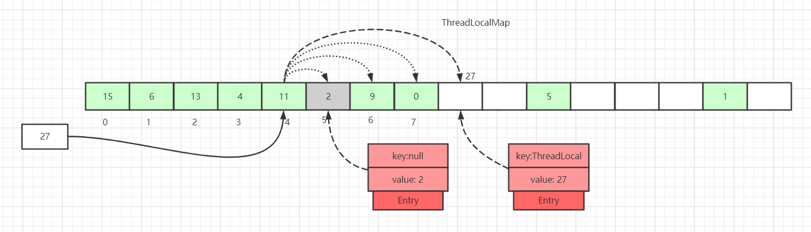
如上图所示，如果我们插入一个value=27的数据，通过 hash 计算后应该落入槽位 4 中，而槽位 4 已经有了 Entry 数据。
此时就会线性向后查找，一直找到 Entry 为 null 的槽位才会停止查找，将当前元素放入此槽位中。当然迭代过程中还有其他的情况，比如遇到了 Entry 不为 null 且 key 值相等的情况，还有 Entry 中的 key 值为 null 的情况等等都会有不同的处理，后面会一一详细讲解。
这里还画了一个Entry中的key为null的数据（Entry=2 的灰色块数据），因为key值是弱引用类型，所以会有这种数据存在。在set过程中，如果遇到了key过期的Entry数据，实际上是会进行一轮探测式清理操作的，具体操作方式后面会讲到。
ThreadLocalMap.set()详解
ThreadLocalMap.set()原理图解
看完了ThreadLocal hash 算法后，我们再来看set是如何实现的。
往ThreadLocalMap中set数据（新增或者更新数据）分为好几种情况，针对不同的情况我们画图来说明。
第一种情况： 通过hash计算后的槽位对应的Entry数据为空：
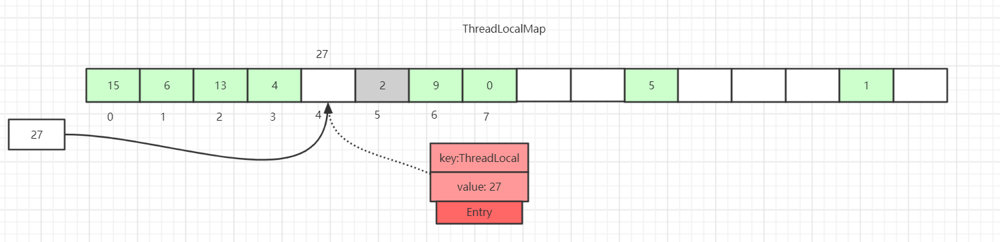
这里直接将数据放到该槽位即可。
第二种情况： 槽位数据不为空，key值与当前ThreadLocal通过hash计算获取的key值一致：
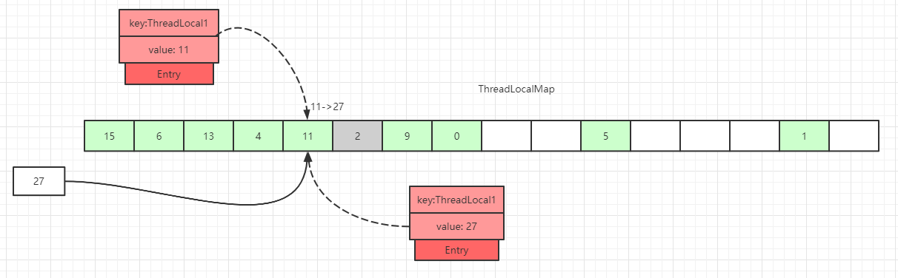
这里直接更新该槽位的数据。
第三种情况： 槽位数据不为空，往后遍历过程中，在找到Entry为null的槽位之前，没有遇到key过期的Entry：
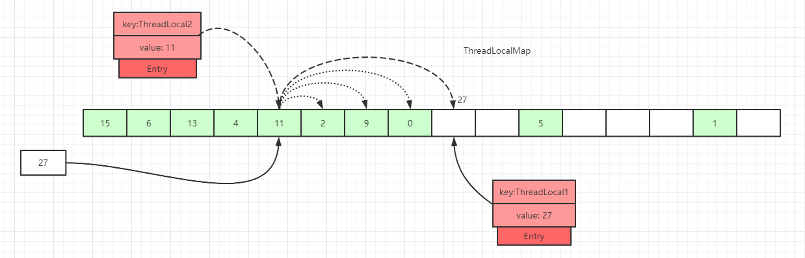
遍历散列数组，线性往后查找，如果找到Entry为null的槽位，则将数据放入该槽位中，或者往后遍历过程中，遇到了key 值相等的数据，直接更新即可。
第四种情况： 槽位数据不为空，往后遍历过程中，在找到Entry为null的槽位之前，遇到key过期的Entry，如下图，往后遍历过程中，遇到了index=7的槽位数据Entry的key=null：
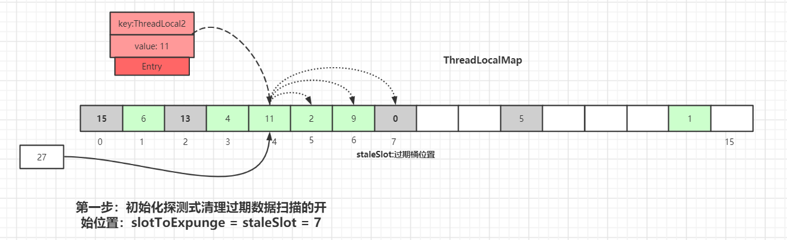
散列数组下标为 7 位置对应的Entry数据key为null，表明此数据key值已经被垃圾回收掉了，此时就会执行replaceStaleEntry()方法，该方法含义是替换过期数据的逻辑，以index=7位起点开始遍历，进行探测式数据清理工作。
初始化探测式清理过期数据扫描的开始位置：slotToExpunge = staleSlot = 7
以当前staleSlot开始 向前迭代查找，找其他过期的数据，然后更新过期数据起始扫描下标slotToExpunge。for循环迭代，直到碰到Entry为null结束。
如果找到了过期的数据，继续向前迭代，直到遇到Entry=null的槽位才停止迭代，如下图所示，slotToExpunge 被更新为 0：
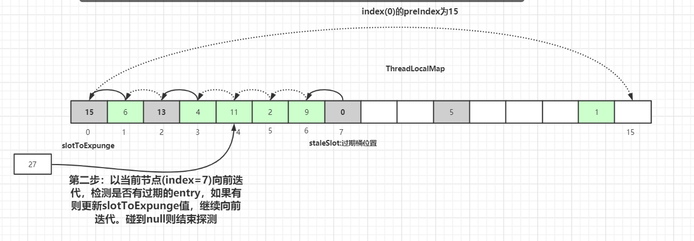
以当前节点(index=7)向前迭代，检测是否有过期的Entry数据，如果有则更新slotToExpunge值。碰到null则结束探测。以上图为例slotToExpunge被更新为 0。
上面向前迭代的操作是为了更新探测清理过期数据的起始下标slotToExpunge的值，这个值在后面会讲解，它是用来判断当前过期槽位staleSlot之前是否还有过期元素。
接着开始以staleSlot位置(index=7)向后迭代，如果找到了相同 key 值的 Entry 数据：
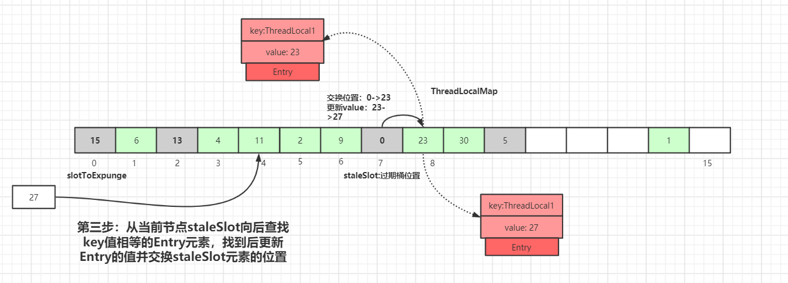
从当前节点staleSlot向后查找key值相等的Entry元素，找到后更新Entry的值并交换staleSlot元素的位置(staleSlot位置为过期元素)，更新Entry数据，然后开始进行过期Entry的清理工作，如下图所示：
 向后遍历过程中，如果没有找到相同 key 值的 Entry 数据：
向后遍历过程中，如果没有找到相同 key 值的 Entry 数据：
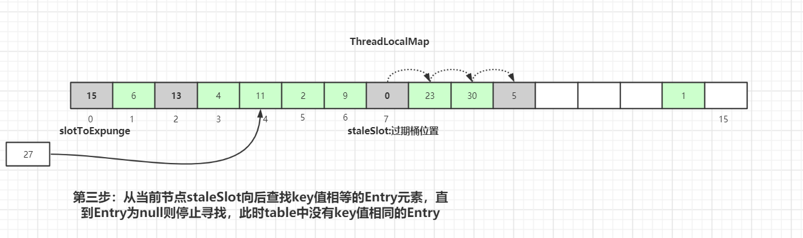
从当前节点staleSlot向后查找key值相等的Entry元素，直到Entry为null则停止寻找。通过上图可知，此时table中没有key值相同的Entry。
创建新的Entry，替换table[stableSlot]位置：
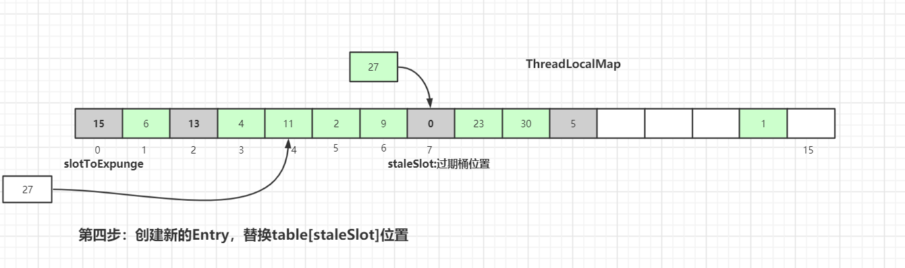
替换完成后也是进行过期元素清理工作，清理工作主要是有两个方法：expungeStaleEntry()和cleanSomeSlots()，具体细节后面会讲到，请继续往后看。
ThreadLocalMap.set()源码详解
上面已经用图的方式解析了set()实现的原理，其实已经很清晰了，我们接着再看下源码：
java.lang.ThreadLocal.ThreadLocalMap.set():
private void set(ThreadLocal<?> key, Object value) {
Entry[] tab = table;
int len = tab.length;
int i = key.threadLocalHashCode & (len-1);
for (Entry e = tab[i];
e != null;
e = tab[i = nextIndex(i, len)]) {
ThreadLocal<?> k = e.get();
if (k == key) {
e.value = value;
return;
}
if (k == null) {
replaceStaleEntry(key, value, i);
return;
}
}
tab[i] = new Entry(key, value);
int sz = ++size;
if (!cleanSomeSlots(i, sz) && sz >= threshold)
rehash();
}
这里会通过key来计算在散列表中的对应位置，然后以当前key对应的桶的位置向后查找，找到可以使用的桶。
Entry[] tab = table;
int len = tab.length;
int i = key.threadLocalHashCode & (len-1);
什么情况下桶才是可以使用的呢？
k = key说明是替换操作，可以使用- 碰到一个过期的桶，执行替换逻辑，占用过期桶
- 查找过程中，碰到桶中
Entry=null的情况，直接使用
接着就是执行for循环遍历，向后查找，我们先看下nextIndex()、prevIndex()方法实现：
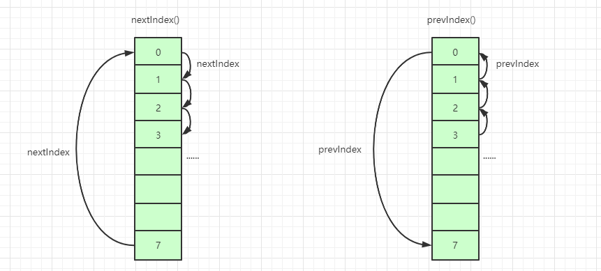
private static int nextIndex(int i, int len) {
return ((i + 1 < len) ? i + 1 : 0);
}
private static int prevIndex(int i, int len) {
return ((i - 1 >= 0) ? i - 1 : len - 1);
}
接着看剩下for循环中的逻辑：
- 遍历当前
key值对应的桶中Entry数据为空，这说明散列数组这里没有数据冲突，跳出for循环，直接set数据到对应的桶中 - 如果
key值对应的桶中Entry数据不为空
2.1 如果k = key，说明当前set操作是一个替换操作，做替换逻辑，直接返回
2.2 如果key = null，说明当前桶位置的Entry是过期数据，执行replaceStaleEntry()方法(核心方法)，然后返回 for循环执行完毕，继续往下执行说明向后迭代的过程中遇到了entry为null的情况
3.1 在Entry为null的桶中创建一个新的Entry对象
3.2 执行++size操作- 调用
cleanSomeSlots()做一次启发式清理工作，清理散列数组中Entry的key过期的数据
4.1 如果清理工作完成后，未清理到任何数据，且size超过了阈值(数组长度的 2/3)，进行rehash()操作
4.2rehash()中会先进行一轮探测式清理，清理过期key，清理完成后如果size >= threshold - threshold / 4，就会执行真正的扩容逻辑(扩容逻辑往后看)
接着重点看下replaceStaleEntry()方法，replaceStaleEntry()方法提供替换过期数据的功能，我们可以对应上面第四种情况的原理图来再回顾下，具体代码如下：
java.lang.ThreadLocal.ThreadLocalMap.replaceStaleEntry():
private void replaceStaleEntry(ThreadLocal<?> key, Object value,
int staleSlot) {
Entry[] tab = table;
int len = tab.length;
Entry e;
int slotToExpunge = staleSlot;
for (int i = prevIndex(staleSlot, len);
(e = tab[i]) != null;
i = prevIndex(i, len))
if (e.get() == null)
slotToExpunge = i;
for (int i = nextIndex(staleSlot, len);
(e = tab[i]) != null;
i = nextIndex(i, len)) {
ThreadLocal<?> k = e.get();
if (k == key) {
e.value = value;
tab[i] = tab[staleSlot];
tab[staleSlot] = e;
if (slotToExpunge == staleSlot)
slotToExpunge = i;
cleanSomeSlots(expungeStaleEntry(slotToExpunge), len);
return;
}
if (k == null && slotToExpunge == staleSlot)
slotToExpunge = i;
}
tab[staleSlot].value = null;
tab[staleSlot] = new Entry(key, value);
if (slotToExpunge != staleSlot)
cleanSomeSlots(expungeStaleEntry(slotToExpunge), len);
}
slotToExpunge表示开始探测式清理过期数据的开始下标，默认从当前的staleSlot开始。以当前的staleSlot开始，向前迭代查找，找到没有过期的数据，for循环一直碰到Entry为null才会结束。如果向前找到了过期数据，更新探测清理过期数据的开始下标为 i，即slotToExpunge=i
for (int i = prevIndex(staleSlot, len);
(e = tab[i]) != null;
i = prevIndex(i, len)){
if (e.get() == null){
slotToExpunge = i;
}
}
接着开始从staleSlot向后查找，也是碰到Entry为null的桶结束。
如果迭代过程中，碰到 k == key，这说明这里是替换逻辑，替换新数据并且交换当前staleSlot位置。如果slotToExpunge == staleSlot，这说明replaceStaleEntry()一开始向前查找过期数据时并未找到过期的Entry数据，接着向后查找过程中也未发现过期数据，修改开始探测式清理过期数据的下标为当前循环的 index，即slotToExpunge = i。最后调用cleanSomeSlots(expungeStaleEntry(slotToExpunge), len);进行启发式过期数据清理。
if (k == key) {
e.value = value;
tab[i] = tab[staleSlot];
tab[staleSlot] = e;
if (slotToExpunge == staleSlot)
slotToExpunge = i;
cleanSomeSlots(expungeStaleEntry(slotToExpunge), len);
return;
}
cleanSomeSlots()和expungeStaleEntry()方法后面都会细讲，这两个是和清理相关的方法，一个是过期key相关Entry的启发式清理(Heuristically scan)，另一个是过期key相关Entry的探测式清理。
如果 k != key则会接着往下走，k == null说明当前遍历的Entry是一个过期数据，slotToExpunge == staleSlot说明，一开始的向前查找数据并未找到过期的Entry。如果条件成立，则更新slotToExpunge 为当前位置，这个前提是前驱节点扫描时未发现过期数据。
if (k == null && slotToExpunge == staleSlot)
slotToExpunge = i;
往后迭代的过程中如果没有找到k == key的数据，且碰到Entry为null的数据，则结束当前的迭代操作。此时说明这里是一个添加的逻辑，将新的数据添加到table[staleSlot] 对应的slot中。
tab[staleSlot].value = null;
tab[staleSlot] = new Entry(key, value);
最后判断除了staleSlot以外，还发现了其他过期的slot数据，就要开启清理数据的逻辑：
if (slotToExpunge != staleSlot)
cleanSomeSlots(expungeStaleEntry(slotToExpunge), len);
ThreadLocalMap过期 key 的探测式清理流程
上面我们有提及ThreadLocalMap的两种过期key数据清理方式：探测式清理和启发式清理。
我们先讲下探测式清理，也就是expungeStaleEntry方法，遍历散列数组，从开始位置向后探测清理过期数据，将过期数据的Entry设置为null，沿途中碰到未过期的数据则将此数据rehash后重新在table数组中定位，如果定位的位置已经有了数据，则会将未过期的数据放到最靠近此位置的Entry=null的桶中，使rehash后的Entry数据距离正确的桶的位置更近一些。操作逻辑如下：
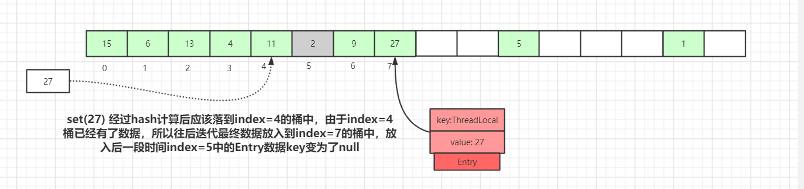
如上图，set(27) 经过 hash 计算后应该落到index=4的桶中，由于index=4桶已经有了数据，所以往后迭代最终数据放入到index=7的桶中，放入后一段时间后index=5中的Entry数据key变为了null
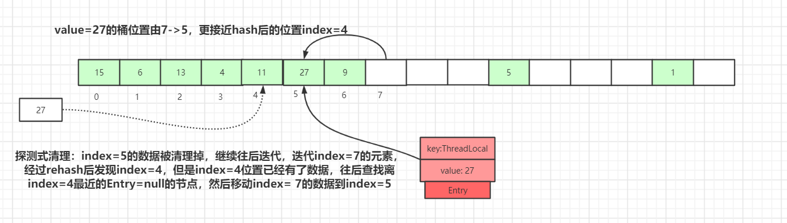
如果再有其他数据set到map中，就会触发探测式清理操作。
如上图，执行探测式清理后，index=5的数据被清理掉，继续往后迭代，到index=7的元素时，经过rehash后发现该元素正确的index=4，而此位置已经有了数据，往后查找离index=4最近的Entry=null的节点(刚被探测式清理掉的数据：index=5)，找到后移动index= 7的数据到index=5中，此时桶的位置离正确的位置index=4更近了。
经过一轮探测式清理后，key过期的数据会被清理掉，没过期的数据经过rehash重定位后所处的桶位置理论上更接近i= key.hashCode & (tab.len - 1)的位置。这种优化会提高整个散列表查询性能。
接着看下expungeStaleEntry()具体流程，我们还是以先原理图后源码讲解的方式来一步步梳理：
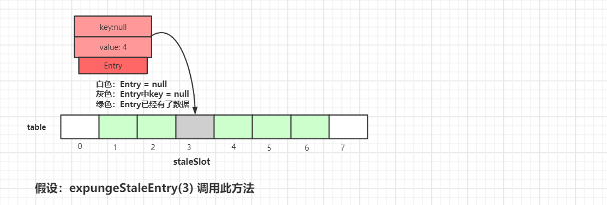
我们假设expungeStaleEntry(3) 来调用此方法，如上图所示，我们可以看到ThreadLocalMap中table的数据情况，接着执行清理操作：
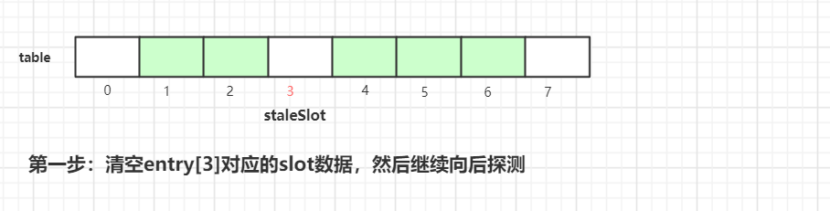
第一步是清空当前staleSlot位置的数据，index=3位置的Entry变成了null。然后接着往后探测：
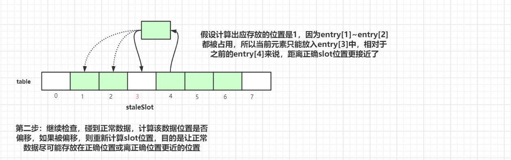
执行完第二步后，index=4 的元素挪到 index=3 的槽位中。
继续往后迭代检查，碰到正常数据，计算该数据位置是否偏移，如果被偏移，则重新计算slot位置，目的是让正常数据尽可能存放在正确位置或离正确位置更近的位置
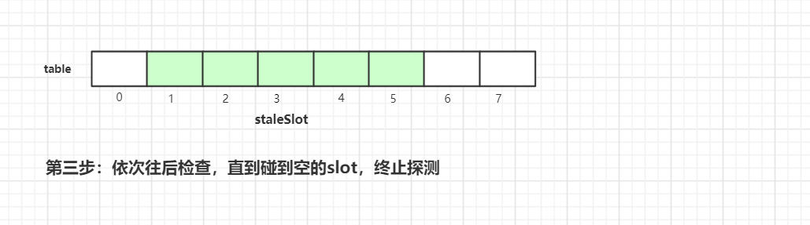
在往后迭代的过程中碰到空的槽位，终止探测，这样一轮探测式清理工作就完成了，接着我们继续看看具体实现源代码：
private int expungeStaleEntry(int staleSlot) {
Entry[] tab = table;
int len = tab.length;
tab[staleSlot].value = null;
tab[staleSlot] = null;
size--;
Entry e;
int i;
for (i = nextIndex(staleSlot, len);
(e = tab[i]) != null;
i = nextIndex(i, len)) {
ThreadLocal<?> k = e.get();
if (k == null) {
e.value = null;
tab[i] = null;
size--;
} else {
int h = k.threadLocalHashCode & (len - 1);
if (h != i) {
tab[i] = null;
while (tab[h] != null)
h = nextIndex(h, len);
tab[h] = e;
}
}
}
return i;
}
这里我们还是以staleSlot=3 来做示例说明，首先是将tab[staleSlot]槽位的数据清空，然后设置size--
接着以staleSlot位置往后迭代，如果遇到k==null的过期数据，也是清空该槽位数据，然后size--
ThreadLocal<?> k = e.get();
if (k == null) {
e.value = null;
tab[i] = null;
size--;
}
如果key没有过期，重新计算当前key的下标位置是不是当前槽位下标位置，如果不是，那么说明产生了hash冲突，此时以新计算出来正确的槽位位置往后迭代，找到最近一个可以存放entry的位置。
int h = k.threadLocalHashCode & (len - 1);
if (h != i) {
tab[i] = null;
while (tab[h] != null)
h = nextIndex(h, len);
tab[h] = e;
}
这里是处理正常的产生Hash冲突的数据，经过迭代后，有过Hash冲突数据的Entry位置会更靠近正确位置，这样的话，查询的时候 效率才会更高。
ThreadLocalMap扩容机制
在ThreadLocalMap.set()方法的最后，如果执行完启发式清理工作后，未清理到任何数据，且当前散列数组中Entry的数量已经达到了列表的扩容阈值(len*2/3)，就开始执行rehash()逻辑：
if (!cleanSomeSlots(i, sz) && sz >= threshold)
rehash();
接着看下rehash()具体实现：
private void rehash() {
expungeStaleEntries();
if (size >= threshold - threshold / 4)
resize();
}
private void expungeStaleEntries() {
Entry[] tab = table;
int len = tab.length;
for (int j = 0; j < len; j++) {
Entry e = tab[j];
if (e != null && e.get() == null)
expungeStaleEntry(j);
}
}
这里首先是会进行探测式清理工作，从table的起始位置往后清理，上面有分析清理的详细流程。清理完成之后，table中可能有一些key为null的Entry数据被清理掉，所以此时通过判断size >= threshold - threshold / 4 也就是size >= threshold * 3/4 来决定是否扩容。
我们还记得上面进行rehash()的阈值是size >= threshold，所以当面试官套路我们ThreadLocalMap扩容机制的时候 我们一定要说清楚这两个步骤：
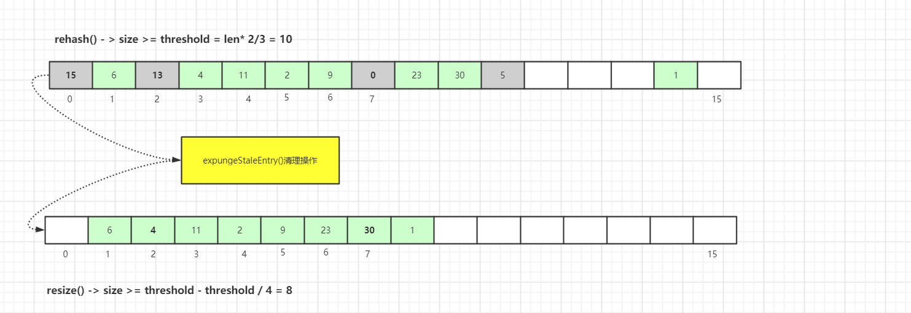
接着看看具体的resize()方法，为了方便演示，我们以oldTab.len=8来举例：
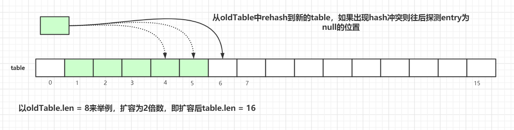
扩容后的tab的大小为oldLen * 2，然后遍历老的散列表，重新计算hash位置，然后放到新的tab数组中，如果出现hash冲突则往后寻找最近的entry为null的槽位，遍历完成之后，oldTab中所有的entry数据都已经放入到新的tab中了。重新计算tab下次扩容的阈值，具体代码如下：
private void resize() {
Entry[] oldTab = table;
int oldLen = oldTab.length;
int newLen = oldLen * 2;
Entry[] newTab = new Entry[newLen];
int count = 0;
for (int j = 0; j < oldLen; ++j) {
Entry e = oldTab[j];
if (e != null) {
ThreadLocal<?> k = e.get();
if (k == null) {
e.value = null;
} else {
int h = k.threadLocalHashCode & (newLen - 1);
while (newTab[h] != null)
h = nextIndex(h, newLen);
newTab[h] = e;
count++;
}
}
}
setThreshold(newLen);
size = count;
table = newTab;
}
ThreadLocalMap.get()详解
上面已经看完了set()方法的源码，其中包括set数据、清理数据、优化数据桶的位置等操作，接着看看get()操作的原理。
ThreadLocalMap.get()图解
第一种情况： 通过查找key值计算出散列表中slot位置，然后该slot位置中的Entry.key和查找的key一致，则直接返回：
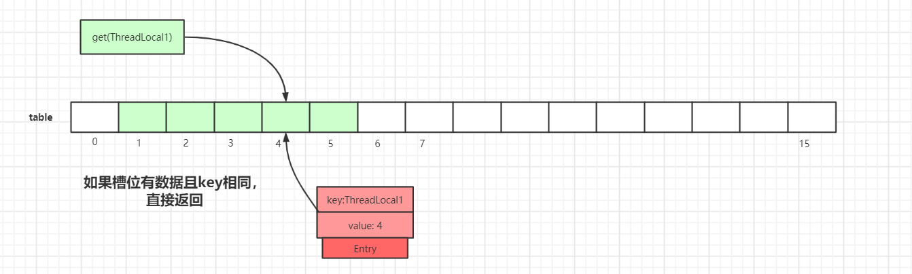
第二种情况： slot位置中的Entry.key和要查找的key不一致：
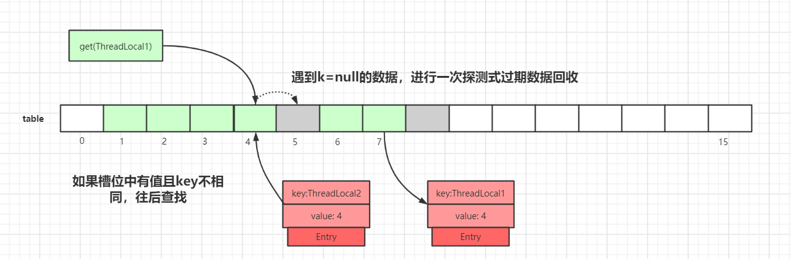
我们以get(ThreadLocal1)为例，通过hash计算后，正确的slot位置应该是 4，而index=4的槽位已经有了数据，且key值不等于ThreadLocal1，所以需要继续往后迭代查找。
迭代到index=5的数据时，此时Entry.key=null，触发一次探测式数据回收操作，执行expungeStaleEntry()方法，执行完后，index 5,8的数据都会被回收，而index 6,7的数据都会前移，此时继续往后迭代，到index = 6的时候即找到了key值相等的Entry数据，如下图所示：
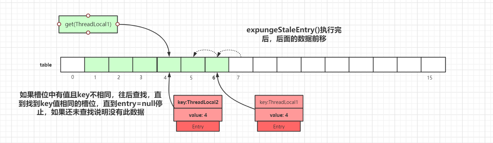
ThreadLocalMap.get()源码详解
java.lang.ThreadLocal.ThreadLocalMap.getEntry():
private Entry getEntry(ThreadLocal<?> key) {
int i = key.threadLocalHashCode & (table.length - 1);
Entry e = table[i];
if (e != null && e.get() == key)
return e;
else
return getEntryAfterMiss(key, i, e);
}
private Entry getEntryAfterMiss(ThreadLocal<?> key, int i, Entry e) {
Entry[] tab = table;
int len = tab.length;
while (e != null) {
ThreadLocal<?> k = e.get();
if (k == key)
return e;
if (k == null)
expungeStaleEntry(i);
else
i = nextIndex(i, len);
e = tab[i];
}
return null;
}
ThreadLocalMap过期 key 的启发式清理流程
上面多次提及到ThreadLocalMap过期key的两种清理方式：探测式清理(expungeStaleEntry())、启发式清理(cleanSomeSlots())
探测式清理是以当前Entry 往后清理，遇到值为null则结束清理，属于线性探测清理。
而启发式清理被作者定义为：Heuristically scan some cells looking for stale entries.
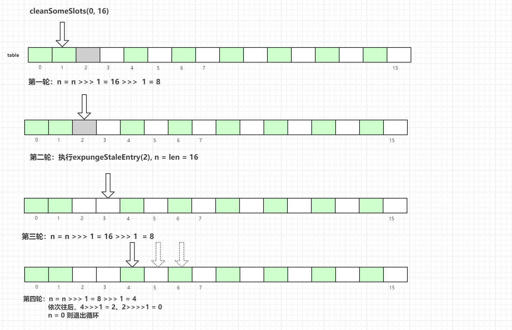
具体代码如下：
private boolean cleanSomeSlots(int i, int n) {
boolean removed = false;
Entry[] tab = table;
int len = tab.length;
do {
i = nextIndex(i, len);
Entry e = tab[i];
if (e != null && e.get() == null) {
n = len;
removed = true;
i = expungeStaleEntry(i);
}
} while ( (n >>>= 1) != 0);
return removed;
}
InheritableThreadLocal
我们使用ThreadLocal的时候，在异步场景下是无法给子线程共享父线程中创建的线程副本数据的。
为了解决这个问题，JDK 中还有一个InheritableThreadLocal类，我们来看一个例子：
public class InheritableThreadLocalDemo {
public static void main(String[] args) {
ThreadLocal<String> ThreadLocal = new ThreadLocal<>();
ThreadLocal<String> inheritableThreadLocal = new InheritableThreadLocal<>();
ThreadLocal.set("父类数据:threadLocal");
inheritableThreadLocal.set("父类数据:inheritableThreadLocal");
new Thread(new Runnable() {
@Override
public void run() {
System.out.println("子线程获取父类ThreadLocal数据：" + ThreadLocal.get());
System.out.println("子线程获取父类inheritableThreadLocal数据：" + inheritableThreadLocal.get());
}
}).start();
}
}
打印结果：
子线程获取父类ThreadLocal数据：null
子线程获取父类inheritableThreadLocal数据：父类数据:inheritableThreadLocal
实现原理是子线程是通过在父线程中通过调用new Thread()方法来创建子线程，Thread#init方法在Thread的构造方法中被调用。在init方法中拷贝父线程数据到子线程中：
private void init(ThreadGroup g, Runnable target, String name,
long stackSize, AccessControlContext acc,
boolean inheritThreadLocals) {
if (name == null) {
throw new NullPointerException("name cannot be null");
}
if (inheritThreadLocals && parent.inheritableThreadLocals != null)
this.inheritableThreadLocals =
ThreadLocal.createInheritedMap(parent.inheritableThreadLocals);
this.stackSize = stackSize;
tid = nextThreadID();
}
但InheritableThreadLocal仍然有缺陷，一般我们做异步化处理都是使用的线程池，而InheritableThreadLocal是在new Thread中的init()方法给赋值的，而线程池是线程复用的逻辑，所以这里会存在问题。
当然，有问题出现就会有解决问题的方案，阿里巴巴开源了一个TransmittableThreadLocal组件就可以解决这个问题，这里就不再延伸，感兴趣的可自行查阅资料。
ThreadLocal项目中使用实战
ThreadLocal使用场景
我们现在项目中日志记录用的是ELK+Logstash，最后在Kibana中进行展示和检索。
现在都是分布式系统统一对外提供服务，项目间调用的关系可以通过 traceId 来关联，但是不同项目之间如何传递 traceId 呢？
这里我们使用 org.slf4j.MDC 来实现此功能，内部就是通过 ThreadLocal 来实现的，具体实现如下：
当前端发送请求到服务 A时，服务 A会生成一个类似UUID的traceId字符串，将此字符串放入当前线程的ThreadLocal中，在调用服务 B的时候，将traceId写入到请求的Header中，服务 B在接收请求时会先判断请求的Header中是否有traceId，如果存在则写入自己线程的ThreadLocal中。
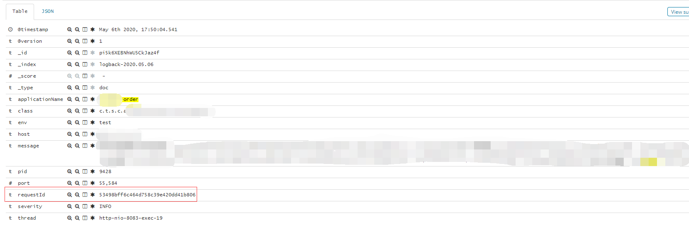
图中的requestId即为我们各个系统链路关联的traceId，系统间互相调用，通过这个requestId即可找到对应链路，这里还有会有一些其他场景：
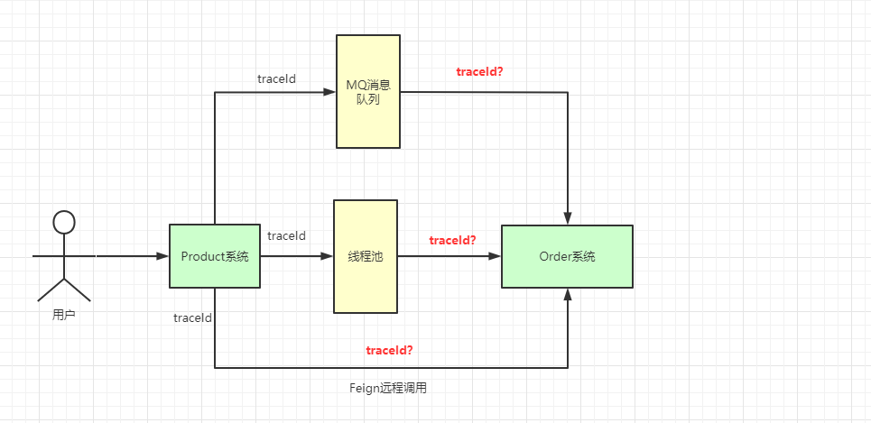
针对于这些场景，我们都可以有相应的解决方案，如下所示
Feign 远程调用解决方案
服务发送请求：
@Component
@Slf4j
public class FeignInvokeInterceptor implements RequestInterceptor {
@Override
public void apply(RequestTemplate template) {
String requestId = MDC.get("requestId");
if (StringUtils.isNotBlank(requestId)) {
template.header("requestId", requestId);
}
}
}
服务接收请求：
@Slf4j
@Component
public class LogInterceptor extends HandlerInterceptorAdapter {
@Override
public void afterCompletion(HttpServletRequest arg0, HttpServletResponse arg1, Object arg2, Exception arg3) {
MDC.remove("requestId");
}
@Override
public void postHandle(HttpServletRequest arg0, HttpServletResponse arg1, Object arg2, ModelAndView arg3) {
}
@Override
public boolean preHandle(HttpServletRequest request, HttpServletResponse response, Object handler) throws Exception {
String requestId = request.getHeader(BaseConstant.REQUEST_ID_KEY);
if (StringUtils.isBlank(requestId)) {
requestId = UUID.randomUUID().toString().replace("-", "");
}
MDC.put("requestId", requestId);
return true;
}
}
线程池异步调用，requestId 传递
因为MDC是基于ThreadLocal去实现的，异步过程中，子线程并没有办法获取到父线程ThreadLocal存储的数据，所以这里可以自定义线程池执行器，修改其中的run()方法：
public class MyThreadPoolTaskExecutor extends ThreadPoolTaskExecutor {
@Override
public void execute(Runnable runnable) {
Map<String, String> context = MDC.getCopyOfContextMap();
super.execute(() -> run(runnable, context));
}
@Override
private void run(Runnable runnable, Map<String, String> context) {
if (context != null) {
MDC.setContextMap(context);
}
try {
runnable.run();
} finally {
MDC.remove();
}
}
}
使用 MQ 发送消息给第三方系统
在 MQ 发送的消息体中自定义属性requestId，接收方消费消息后，自己解析requestId使用即可。